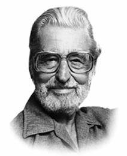

Theodor Seuss "Ted" Geisel was an American children's author, political cartoonist, illustrator, poet, animator, screenwriter, and filmmaker. He is known for his work writing and illustrating more than 60 books under the pen name Dr. Seuss (/suːs, zuːs/, ). His work includes many of the most popular children's books of all time, selling over 600 million copies and being translated into more than 20 languages by the time of his death
To learn about my favorite Dr. Suess book "The Cat in the Hat" head to the story page.